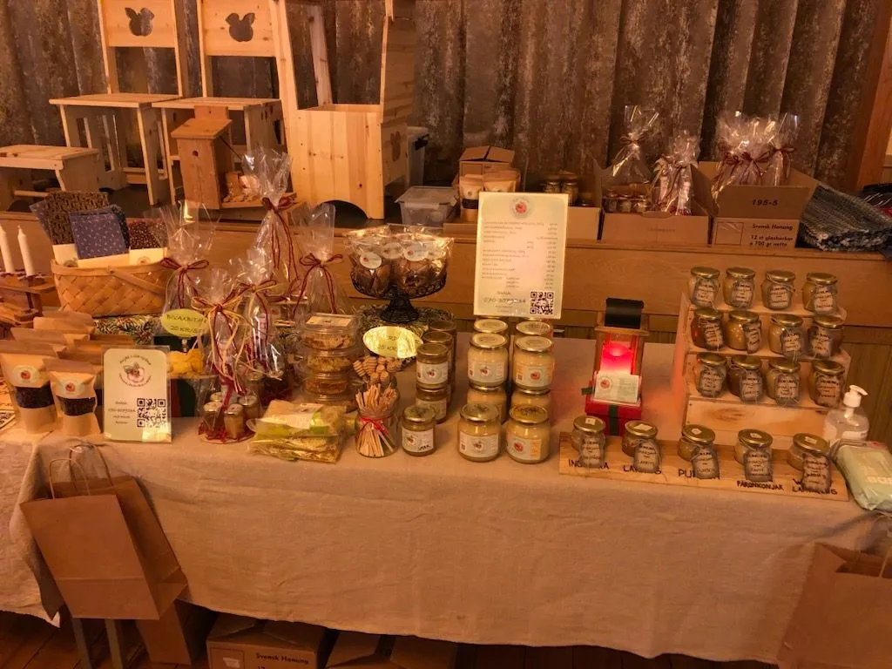

260108 SNÖOVÄDER
Igår kom det mycket snö här och det kan innebära att mycket snö hamnar på flustret. Om flustret blir helt tillstängt innebär det att luftgenomströmningen blir för dålig för bina. Om bina behöver ut för att bajsas kommer dom inte ut vilket innebär att dom bajsar i kupan och det kan medföra sjukdomar.
Så idag har jag kollat alla samhällen och tagit bort snön från flustret.
251130 JULMARKNAD I BULLARGÅRDEN
Idag har det varit fullfart på bullarens julmarknad. Det är en mysig innemarknad där det serveras gröt och skinksmörgås.
Trött men mycket glad har jag nu kommit hem och känner mig så upplyft av alla fina kommentarer om våra biprodukter.
TACK! Alla som kommit fram och pratat och handlat av oss.
